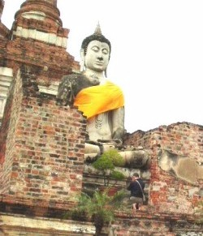

| Trang gốc |
Vietnamese, with Unicode Times font |
|
Nhật ký Hành hương - 2004 Bình Anson -ooOoo-
1. Hành hương Ấn Độ -ooOoo- Phần 3 Thứ Năm, 25-11-2004: Như thường lệ, tôi thức dậy sớm, ra trước nhà để bát cho chư Tăng chùa Wat Donmuang. Trưa hôm đó, cùng với các người em vợ, chúng tôi vào Bangkok, rồi đến chùa Wat Paknam viếng thăm chư tăng Việt Nam hiện đang tu học ở đó. Tôi gặp được Sư Tường Phác và Sư Minh Nguyệt, và được quý Sư tặng cho các đĩa CD ghi âm các bài tụng kinh tiếng Pàli của chư Tăng Thái Lan. Tôi rất hoan hỷ. Thứ Sáu, 26-11-2004: Hôm nay là ngày lễ hội Loy Krathong của người Thái. Tôi nhờ gia đình đưa tôi đi tham quan. Trước hết, chúng tôi đến thăm Học viện Kỹ thuật châu Á (Asian Institute of Technology, A.I.T.), nơi tôi đã từng theo học chương trình Master hơn 30 năm trước. Vào thăm Học viện, tôi gặp ông Giám đốc Ban Liên lạc Quốc tế, là một người Việt và cũng là một cựu sinh viên của trường. Tôi rảo bộ đến xem phòng ốc, các nơi giảng dạy, phòng thí nghiệm, văn phòng, nhà ăn. Nhiều nơi cũng còn các vết tích ngày xưa. Tôi đến xem và chụp ảnh phòng ngủ cũ, nơi tôi trú ngụ trong 4 năm. Cũng giống như trước, không có gì thay đổi. Tiếp tục lên đường, chúng tôi đến viếng cố đô Ayutthaya, nổi tiếng là nơi có nhiều chùa và tượng Phật lộ thiên. Ăn trưa tại một quán bên đường, bán đủ loại hủ tíu. Ayutthaya còn là nơi có tiếng về loại "hủ tíu ghe" (tiếng Thái là "quế-tỉu rưa"), ngày xưa thường được bán trên các chiếc ghe xuồng nhỏ, chèo dọc theo các kênh rạch trong vùng. Chúng tôi đến thăm ba ngôi chùa cổ: Wat Yai Chai Mongkol, Wat Phra Mongkolbophit, Wat Phra Sri Sanphet. Ngày xưa, đây là những tự viện rất qui mô, với những tượng Phật rất lớn, nhưng đã bị quân Miến Điện tàn phá trong những cuộc chiến tranh khoảng 300 năm trước. Chúng tôi cũng đến viếng chùa Wat Phanan Choeng, tọa lạc cạnh bờ sông Chao Phya, là một trong những ngôi chùa được trùng tu về sau này. Đây là một chùa lớn, và có rất nhiều người dân địa phương đến lễ bái. Trong chánh điện, có một tượng Phật bằng đồng đỏ, cao hơn 10 mét. Hôm nay, ban tổ chức đang sửa soạn dựng rạp để trình diễn văn nghệ cho lễ hội Loy Krathong tối hôm đó. Ngoài sân, cạnh bờ sông, có xây một đền nhỏ, theo kiến trúc Trung Hoa, bên trong có thờ thêm các vị thần của văn hóa Tàu, và dân chúng thường đến đó để cầu xin, van vái, xin xăm, bói quẻ. Chúng tôi trở về thị trấn Donmuang, sửa soạn hành lý. Ra phi trường, lên máy bay lúc 23:30 giờ tối để trở về Perth, kết thúc một chuyến du hành kéo dài 5 tuần lễ. * * * N hìn lại, trong chuyến về Việt Nam lần này, tôi đã đi lễ Phật và thăm viếng 37 ngôi chùa, trong số đó có 31 chùa Nam Tông, 5 chùa Bắc Tông và 1 chùa Khất Sĩ. Đồng thời, chúng tôi cũng có đi thăm, ủy lạo và đóng góp tịnh tài tại 5 cơ sở từ thiện xã hội.Ngoài ra, khi ở Thái Lan, chúng tôi cũng có thu xếp thì giờ để đi thăm viếng, lễ Phật tại 7 ngôi chùa Thái. Chuyến hành hương năm nay có được nhiều kết quả tốt đẹp cũng là nhờ thiện tâm giúp đỡ, đóng góp, khuyến khích của nhiều vị Tăng Ni và thân hữu thuộc mọi hệ phái Phật giáo, ở Việt Nam cũng như tại hải ngoại. Chúng tôi thành tâm ghi nhận và tán thán công đức của quý vị đó. Nam mô Bổn sư Thích ca Mâu ni Phật Bình Anson, Ghi chú:
[Trở
về trang Thư Mục] |